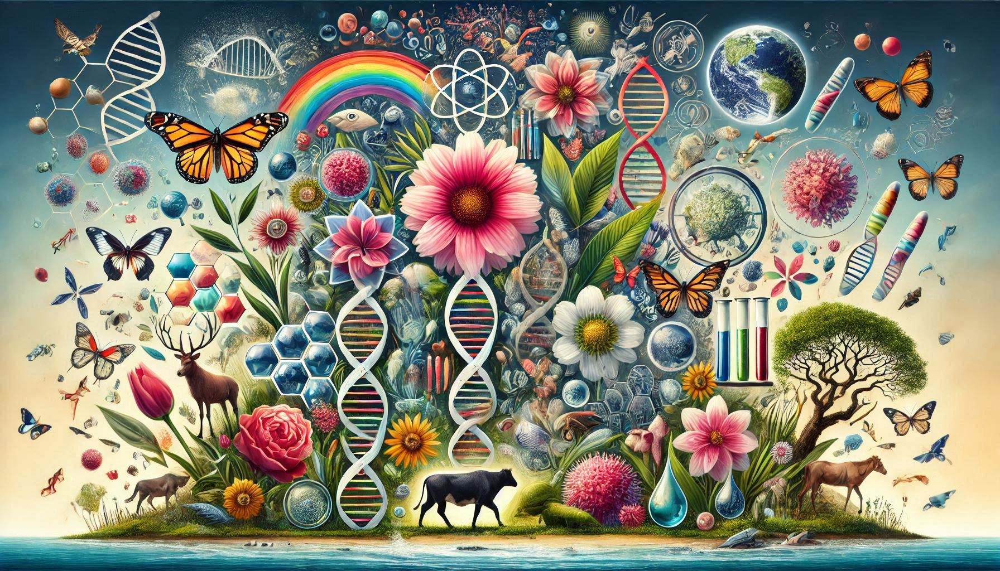
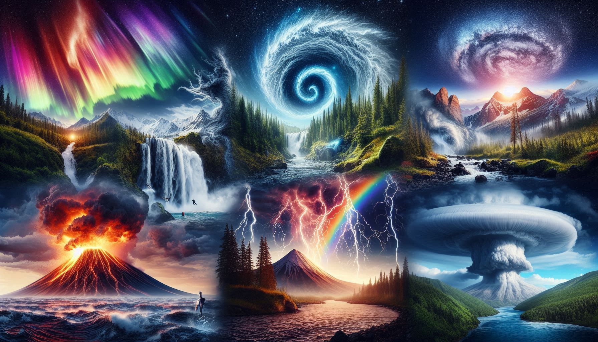
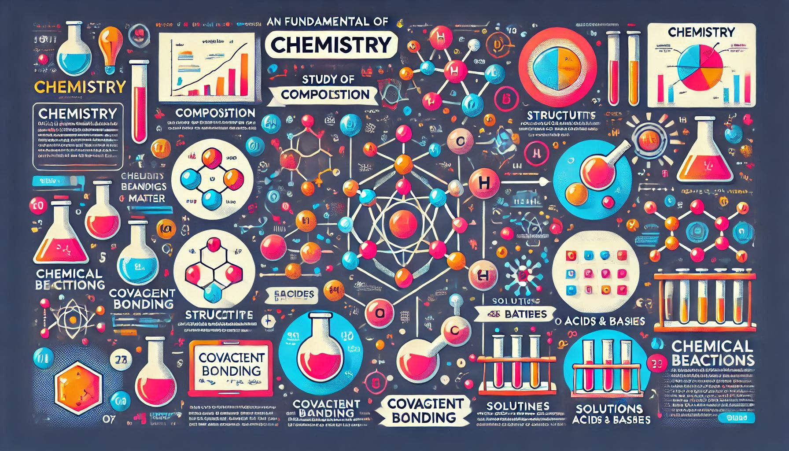
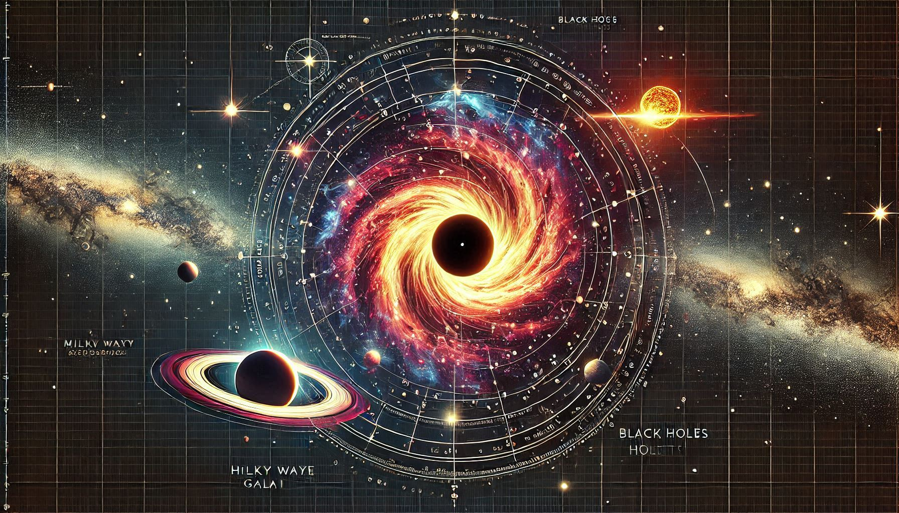
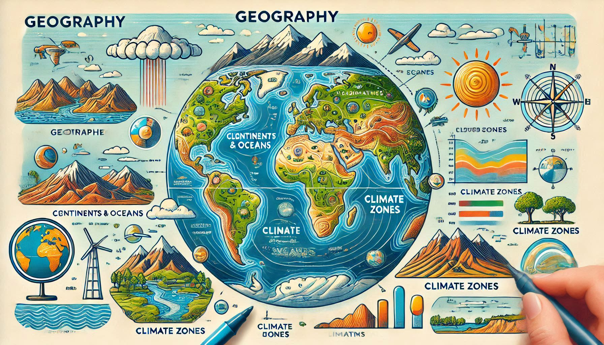

Fisika mencakup berbagai konsep seperti mekanika, termodinamika, dan elektromagnetisme. Dengan fisika, kita dapat memahami bagaimana dunia ini bekerja, mulai dari gerak benda hingga perilaku partikel subatomik.
Biologi: Keajaiban Kehidupan

Biologi mempelajari makhluk hidup, struktur tubuh, dan lingkungan tempat mereka hidup.
Biologi mencakup studi tentang sel, genetika, evolusi, ekosistem, dan hubungan antar makhluk hidup. Ilmu ini membantu kita memahami kehidupan dari skala mikroskopis hingga ekosistem global.
Fenomena Alam: Alam yang Menakjubkan

Fenomena alam adalah kejadian yang terjadi di lingkungan alam seperti tornado dan gempa bumi.
Fenomena alam mencakup berbagai kejadian seperti siklon, aurora, gunung berapi, dan gempa bumi. Fenomena ini sering kali mencerminkan keindahan sekaligus kekuatan alam.
Kimia: Reaksi dan Zat

Kimia adalah ilmu yang mempelajari komposisi, struktur, sifat, dan perubahan materi.
Kimia melibatkan studi tentang unsur-unsur, senyawa, dan reaksi kimia. Dengan memahami kimia, kita dapat menciptakan teknologi baru seperti baterai, obat-obatan, dan material modern.
Astronomi: Eksplorasi Luar Angkasa

Astronomi mempelajari bintang, planet, galaksi, dan fenomena luar angkasa lainnya.
Astronomi membantu kita memahami alam semesta, termasuk asal-usul planet, bintang, dan fenomena seperti supernova dan lubang hitam. Teknologi teleskop modern memungkinkan eksplorasi mendalam terhadap kosmos.
Geografi: Bentuk dan Pola Bumi

Geografi mempelajari bentuk, pola, dan dinamika permukaan bumi.
Geografi mencakup studi tentang iklim, topografi, sumber daya alam, dan hubungan manusia dengan lingkungannya. Dengan geografi, kita dapat memahami distribusi populasi dan pola migrasi manusia.